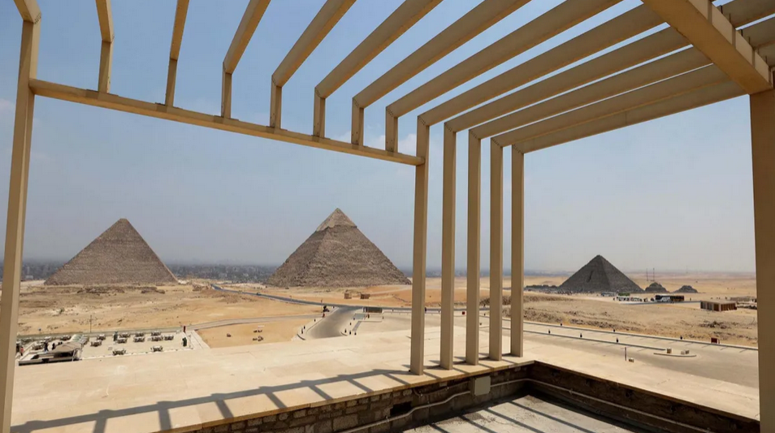

رحلة في قلب مشروع تطوير هضبة الأهرامات
تحول عميق يتجاوز الخدمات ليصل إلى إعادة تعريف العلاقة بين الأثر والسائح والدولة.
لا يحتاج الزائر إلى كثير من التدقيق ليلاحظ أن المشهد العام في هضبة الأهرامات في مطلع العام 2026، لم يعد كما كان قبل سنوات قليلة. الصمت النسبي الذي تصنعه الحافلات الكهربائية، وانسيابية حركة الدخول، واختفاء كثير من المظاهر التي ارتبطت طويلًا بفوضى الزيارة، كلها مؤشرات على أن الموقع الأثري الأشهر في العالم يخضع لتحول عميق، يتجاوز كونه مجرد تحسينات خدمية، ليصل إلى إعادة تعريف العلاقة بين الأثر والسائح والدولة.
مشروع تطوير منطقة الأهرامات لم يكن قرارًا مفاجئًا، بل جاء نتيجة تراكم طويل من الإخفاقات الإدارية التي عانت منها المنطقة لعقود، رغم قيمتها التاريخية والرمزية. ملايين الزوار كانوا يتوافدون سنويًا إلى موقع يفتقر إلى الحد الأدنى من التنظيم، من هنا، بدأ التفكير في نموذج جديد لإدارة الخدمات، يحقق التوازن بين حماية الأثر وتقديم تجربة تليق بمكانة الأهرامات عالميًا.
إدارة بلا ملكية: الإطار القانوني للمشروع
من أكثر النقاط التي أُسيء فهمها في الرأي العام مسألة علاقة شركة أوراسكوم بالمنطقة الأثرية. فالمشروع، منذ بدايته، لم يقم على نقل ملكية أو تأجير الموقع، وإنما على إسناد إدارة الخدمات السياحية إلى جهة متخصصة، بينما تظل الدولة، ممثلة في وزارة السياحة والآثار، صاحبة السيادة الكاملة على الأرض والأثر.
"هذا الفصل بين الإدارة والملكية هو جوهر النموذج الجديد. فالشركة تتحمل مسؤولية التشغيل اليومي، بينما تذهب إيرادات تذاكر الدخول مباشرة إلى الخزانة العامة للدولة."
البنية التحتية غير المرئية: ما لا يراه السائح
واحدة من أهم مراحل التطوير لم تكن ظاهرة للعيان، لكنها كانت الأكثر كلفة وتأثيرًا. فقد استلزم المشروع إعادة بناء شبكات الصرف، وتحديث أنظمة الكهرباء، ومد كابلات الاتصالات، وإنشاء منظومات حديثة للحماية من الحرائق، وكلها أعمال تمت تحت الأرض حمايةً لاستدامة الموقع من التآكل التدريجي.
مركز الزوار: إعادة تعريف لحظة الدخول
مركز الزوار الجديد، المقام عند مدخل طريق الفيوم، غيّر بالكامل فلسفة الزيارة. هذا المركز لا يعمل كنقطة عبور فقط، بل كمساحة تمهيدية تُهيئ الزائر نفسيًا ومعرفيًا قبل مواجهة الأثر. التصميم المعماري للمركز اعتمد على مواد تتناغم مع طبيعة الهضبة، دون استعراض أو مبالغة.
النقل الكهربائي: التكنولوجيا تخدم التاريخ
من أبرز مظاهر التطوير اعتماد منظومة نقل داخلية تعتمد على الحافلات الكهربائية. هذه الخطوة كانت ضرورة بيئية وأثرية؛ فالتلوث والضوضاء كانا من أخطر التهديدات للأثر، ومع التحول للنقل النظيف، انخفض الضغط البيئي بشكل واضح، مما جعل تجربة الزيارة أكثر هدوءًا واحترامًا للمكان.
الخيالة والجمالة: معضلة اجتماعية معقدة
الحل لم يكن الإقصاء، بل الدمج المنظم. من خلال تحديد مناطق مخصصة، ووضع تسعير واضح، وربط الخدمة بنظام حجز وتقييم، أصبح النشاط جزءًا من المنظومة السياحية الرسمية، بدل أن يكون عنصر فوضى. ورغم الصعوبات الأولية، بدأت النتائج تظهر في صورة تجربة أكثر أمانًا واحترامًا للطرفين.
الخدمات والمطاعم: جدل الرفاهية والهيبة
أثار وجود مطاعم ومقاهٍ بالقرب من الأهرامات جدلًا واسعًا. الحقيقة أن السائح المعاصر لا يفصل بين المعرفة والراحة، وتوفير خيارات طعام منظمة لم تعد كماليات، بل جزءًا أساسيًا من أي موقع سياحي عالمي، والتحدي يكمن في ضبط هذه الخدمات بحيث تخدم التجربة دون أن تطغى على الأثر.
الأهرامات في السياق العالمي والمستقبل
عند مقارنة تجربة الجيزة بمواقع أثرية كبرى، يتضح أن ما تحقق وضع الأهرامات في موقع تنافسي جديد. المخططات المستقبلية تشير إلى إدخال مزيد من التقنيات التفاعلية وتوسيع الاعتماد على الطاقة النظيفة، مع الحفاظ على التوازن الدقيق بين التطوير والحماية.
مشروع تطوير الأهرامات تجربة إدارية وثقافية تعكس كيف يمكن لموقع عمره آلاف السنين أن يتفاعل مع متطلبات القرن الحادي والعشرين دون أن يفقد روحه. الأهرامات اليوم تُدار بعقلية تدرك أن حماية التاريخ تبدأ من احترام الزائر، وتنتهي بالحفاظ على الأثر للأجيال القادمة.